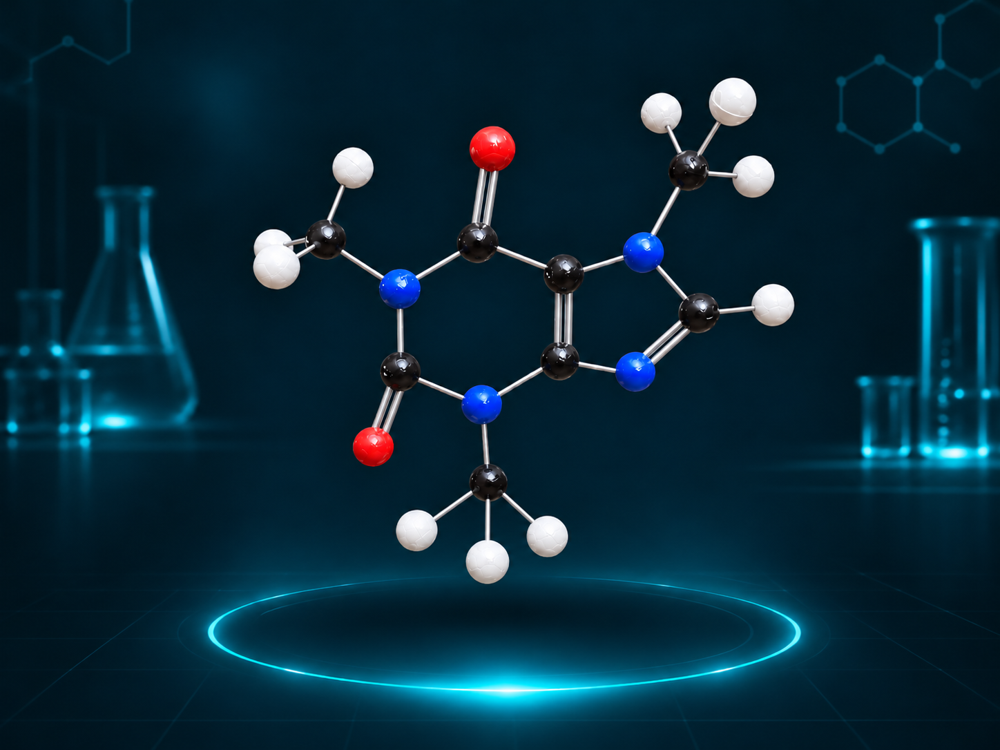

La cafeína activa los canales de potasio (K+), lo que puede causar una hiperpolarización celular y una reducción de la excitabilidad neuronal.
La Ciencia de la
Cafeína
Ver Modelo MolecularSu descubrimiento
El profesor de química de Runge, Döbereiner, invitó a Gothe a ver cómo Runge podía cambiar los ojos de los gatos con el extracto de la belladona. Gothe se sorprendió al notar la diferencia entre las pupilas del gato y le dio una caja de granos de café para que los analizara químicamente. En 1820, Runge descubrió la cafeína.
01 / LA MOLÉCULA
¿Qué es la cafeína?
La cafeína es un estimulante natural que actúa sobre el cerebro y el sistema nervioso central, además de aumentar la circulación de sustancias químicas como el cortisol. Un consumo moderado de cafeína puede tener un efecto positivo en nuestro cuerpo. Por ejemplo:
- Pueden influir positivamente en el humor y el comportamiento. Además, aumenta la energía, la sociabilidad y la confianza en nuestras propias capacidades.
- La cafeína puede contribuir a una mejora significativa de la resistencia y la capacidad de ejercicio.
02 / ESTRUCTURA QUÍMICA
Su estructura química.
La cafeína (C8H10N4O2) pertenece a la familia de los alcaloides xantínicos y está estrechamente relacionada con la teofilina y la teobromina. Su estructura está compuesta por un sistema de anillos fusionados con grupos metilo (-CH3), lo que le confiere propiedades lipofílicas que facilitan su rápida absorción en el torrente sanguíneo.

03 / EN LA VIDA COTIDIANA
La cafeína está más cerca de lo que imaginas.
La cafeína ayuda a mantenerse despierto y concentrado cuando hay cansancio o fatiga temporal.
La cafeína se utiliza como suplemento previo al ejercicio para retrasar la fatiga y mejorar el desempeño deportivo.
La cafeína se añade a algunos analgésicos o fármacos para el dolor de cabeza y el resfriado para potenciar su acción.
Algunos productos para bajar de peso contienen cafeína para potenciar su efecto.
Muchas barritas y polvos energéticos o para mejorar el rendimiento contienen cafeína para un impulso adicional.
La cafeína también se encuentra en algunas cervezas de raíz, refrescos de naranja y refrescos transparentes, ya que usualmente se les añade cafeína para mejorar su sabor o efecto.
La cafeína también se puede encontrar en suplementos y productos a base de hierbas. Ingredientes como el guaraná, la yerba mate y el extracto de grano de café verde son fuentes naturales de cafeína.
Referencias
Fuentes utilizadas para la información: